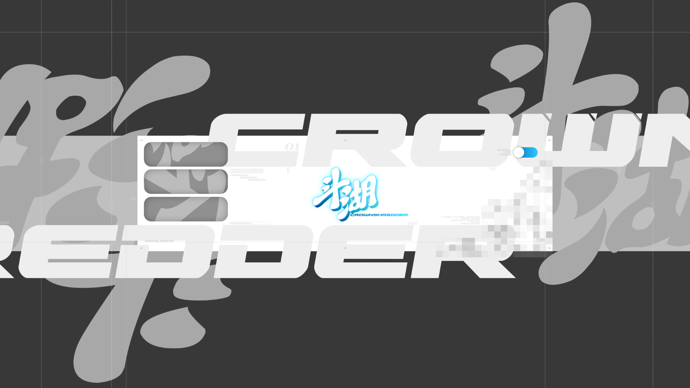
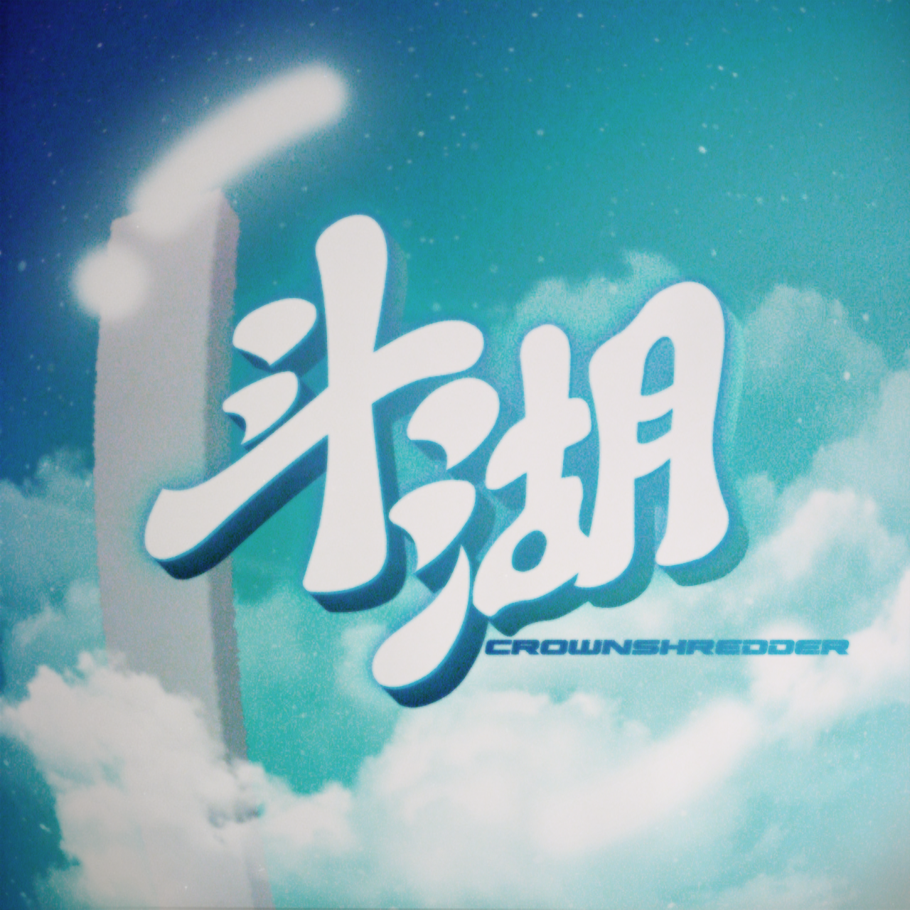

INTRO / 001
斗湖 / CROWNSHREDDER
Motion Designer
BGA · PV · Motion Graphics · Visual Identity
음악과 아이디어의 리듬을 영상, 그래픽, 공간감으로 번역합니다. BGA와 PV부터 로고, 포스터, 이벤트 비주얼까지 작업합니다.
View Selected Works →SELECTED WORKS / 002
A focused selection of motion, identity, and direction.

PROJECT DETAIL TEMPLATE / 003
A repeatable structure for each case study.
영상, 개요, 역할, 사용 도구, 제작 과정과 크레딧을 한 템플릿에서 관리합니다.
Preview Template →PROJECT / CATEGORYPROJECT TITLE
Overview · Role · Tools · Process · Credits
ABOUT / EXPERIENCE
Designing rhythm.
Shaping movement.
1998년생으로 중학생 때부터 영상 제작을 시작했습니다. 회사에서 협업과 기획 경험을 쌓은 뒤 개인 활동을 이어가고 있습니다.
View Experience →
- Name
- 김도호 / 斗湖
- Role
- Motion Designer
- Specialty
- BGA / PV / Motion / Identity
- Tools
- After Effects, Blender, Illustrator, Photoshop